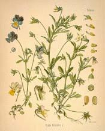

Breton Herbal

Data drawn from "Bretagne, terre sacrée" by Gwenc'hlan Le Scouezec.
Illustrations: http://www.botanical.com/botanical/mgmh/mgmh.html.
The herbs tagged with (SY) (=Sant Yann, St John) should be picked around the summer solstice!
The herbs tagged with an asterisk are quoted in the French-Breton Dictionary by the Revd Gregory of Rostrenen (1732).
ATTENTION: This is no manual of phytotherapy! For this purpose please refer to the link above!
| Breton | Linné | English | Transc. of Bret. Name | Usage |
| aour yeotenn | drosera rotundifolia | Sundew | Herb of Gold (cf. Loiza) | magic! Cough, breating trouble |
| ar sklaer*, louzaouenn ar gwimilied | chelidonium majus | greater celandin | the bright one | eye pains |
| ar sklaerig* | euphrasia officinalis | eyebrigh | the little bright one | sores, ophtalmias |
| beler | nasturtium officinale | watercress | watercress | scurvy, skin affections |
| hed-ledan, stlaseg, stanveg* | plantago lanceolata | snake plantain | plantain | stiffening of woven fabrics |
| lost louarn* | foeniculum vulgare | sweet fennel | fox tail | purgative |
| louzaouenn an daoulagad* | chelidonium majus | greater celandin | eyes herb | eye pains |
| louzaouenn an darvoed* | euphrasia officinalis | eyebrigh | sore herb | sores, ophtalmias |
| l ouzaouenn an denved* | thymus serpyllum | wild thyme, mother of thyme | sheep's herb | veterinary intestinal disinfectant |
| louzaouenn an derzienn* | teucrium chamaedrys | wall germander | fever herb | diuretic+fever |
| louzaouenn an divulum | geranium robertianum | antivenom herb | adder bites, skin affections | |
| louzaouenn an diwad | sanicula europaea | wood sanicle | bleeding herb | bleeding |
| louzaouenn an Dreinded* | viola tricolor | wild pansy | Trinity's herb | eczema, sores |
| louzaouenn an dren* | artemisia abrotanum | southernwood | thorn herb | vermifuge |
| louzaouenn an elaz* | Hepatica nobilis Sch. | noble liverwort | liver herb | astringent |
| louzaouenn an naer* | arum maculatum | cuckoo-pint | snake herb | adder bites |
| louzaouenn an trouc'h* | symphytum officinale | comfrey, foxglove | cuts herb | bleeding |
| louzaouenn an trouc'h | polygonum persicaria | smartwee | cuts herb | bleeding |
| louzaouenn an trouc'h | polygonum persicaria | water pepper | cuts herb | bleeding |
| louzaouenn ar c'halvez* | achillea millefolium | yarrow | carpenter's herb | tonic, digestive and antiseptic herb tea |
| louzaouenn ar c'haz, an dam, linadenn real* | nepeta cataria | catmint, catnep | cat's herb, Royal nettle | bronchitis |
| louzaouenn ar c'hi*, treuzh-yeod (SY) | agropyro repens | couch-grass, Scotch quelch, quick grass, dog-grass | dog's herb | diuretic tea |
| louzaouenn ar c'housked* | hyosciamus niger | henbane POISON! | slumber herb | hallucinogen, hypnotic |
| louzaouenn ar c'hwenn* | mentha pulegium | pennyroy herb | fleas h. | fleas |
| louzaouenn ar flemm | aconitum napellus | aconite POISON! | spear herb | poison, cough |
| louzaouenn ar gal, an berr-alan* | knautia arvensis | scabious | scabies herb | scabies |
| louzaouenn ar galon* | melissa officinalis | balm | heart herb | heart disease |
| louzaouenn ar gouli* | pyrola rotundifolia | large wintergreen | wound herb | wound healing |
| louzaouenn ar groaz, varlenn*(SY) | verbena officinalis | vervain, herb of grace | herb of the Cross | giddiness, bleeding |
| louzaouenn ar gwenaennoù , tro-heol | helianthus annuus | sunflowe | wart herb | warts |
| louzaouenn ar mammoù* (SY) | matricharia chamomilla | wild chamomile | mother's herb | menses regulation |
| louzaouenn ar men (grevell) | physalis Alkekengi | winter cherry, cape gooseberry | (gravel) stone h. | gravel stones |
| louzaouenn ar moger* | parietaria diffusa Mertens et Koch | pellitor of the wall | wall herb | diuretic |
| louzaouenn ar paz* | tussilago forfara | coltsfoot, horsehoof | coughwort | cough |
| louzaouenn ar pemp delienn* | potentilla reptens | Five-leaf grass, cinquefoil | 5 leaves herb | tonic |
| louzaouenn ar vozenn* | carlina acaulis | ground thistle | plague herb | antibiotic |
| louzaouenn ar vrec'h* | knautia arvensis | scabious | smallpox herb | smallpox |
| louzaouenn Zant Yann 1*, beverezh* (SY) | sedum acre | stonecrop | St John's wort | epilepsy, abortive |
| louzaouenn an diwad (SY), faolodenn* | hypericum perforatum | St John's wort | St John's wort | bleeding |
| louzaouenn Zantez Apollina* | hyosciamus niger | henbane POISON! | St Appoline's herb | hallucinogen, hypnotic |
| louzaouenn al laou* | delphinium ajacis | field larkspur | lice h. | lice and nits |
| louzaouenn al laou* | evonymus europaeus | spindel-tree | lice h. | lice and nits |
| louzaouenn an tign* | Arctium lappa | burdock | ringworm h | wounds |
| louzaouenn ar c'hatarr* | pulsatilla pratensis | meadow anemone, pasque flower | catarrh herb | catarrh |
| louzaouenn ar skenved* | mentha pulegium | mountain rose herb | lungs h. | cough |
| louzaouenn ar varlen, stagerez* | Arctium lappa | burdock | lap h. | wounds |
| louzaouenn droug ar Roué*, louzaouenn droug Sant Kado* | scrofularia nodosa | knotted figwort | King's evil h. | scrofula |
| louzaouenn laezeg*, laezegezh* | sonchus oleraceus | common sow thistle, hare's lettuce | milk herb | food for rabbits |
| louzaouenn Zantez Barba | sisymbrium officinale, erysimum officinale | Singer's plant | St Barbara's hedge mustard | remedy for loss of voice |
| louzaouenn Zantez Marc'harid | chrysanthemum leucanthemum | daisy, ox-eye | St Margaret's h. | wound healing |
| munudig* | thymus serpyllum | serpyllum | the tiny little one | veterinary intestinal disinfectant |
| uhel-varr* | viscum album | mistleto | high vine | epilepsy, antispasmodic, internal haemorrhage |
| louzaouenn Zant Yann 2 (SY) * | artemisia vulgaris | mugwort | St John's belt | menses regulation, tonic |
| gourradenenn (SY) * | dryopteris filix mas | male fern | St John's root | vermifuge |
{kind=link}
{kind=link}
{kind=link}
{kind=link}
{kind=link}
{kind=link}
{kind=link}
{kind=link}
{kind=link}
{kind=link}
{kind=link}
{kind=link}
{kind=link}
{kind=link}
{kind=link}
{kind=link}
{kind=link}
{kind=link}
{kind=link}
{kind=link}
{kind=link}
{kind=link}
{kind=link}
{kind=link}
{kind=link}
{kind=link}
{kind=link}
{kind=link}
{kind=link}
{kind=link}
{kind=link}


Dernière mise à jour le 24/07/03
Par Christian SOUCHON
Email:
chrsouchon@free.fr